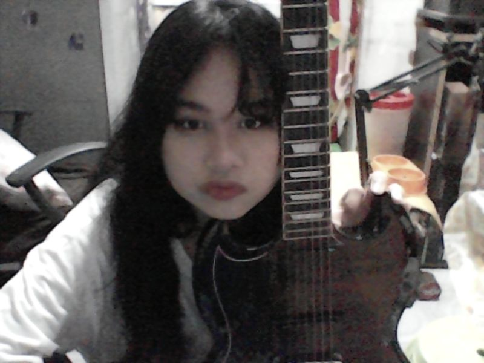

Rovielyn A. Matoza
 About me
I'm a G10 Student from GEN. PIO DEL PILAR NATIOMAL HIGHSCHOOL from Makati city Philipines.
I like Mapeh and TLE class because i am more interested in those and easy to me.
I love Listening to music,Drawing and dancing, but i always listening to music and drawing since
I don't have enough time to dance and to practice.I draw people like real people and anime.i draw on sat and sundays because i have more time.
Drawing and painting for me is so calming while listening to music it gets me forget my problems and keep me away from anxiety.
Speaking of Drawing and music I get motivated and comforted while listening to BTS's songs because of their music and their advices.
That's why my favorite artist of all time is BTS.
Back to Home